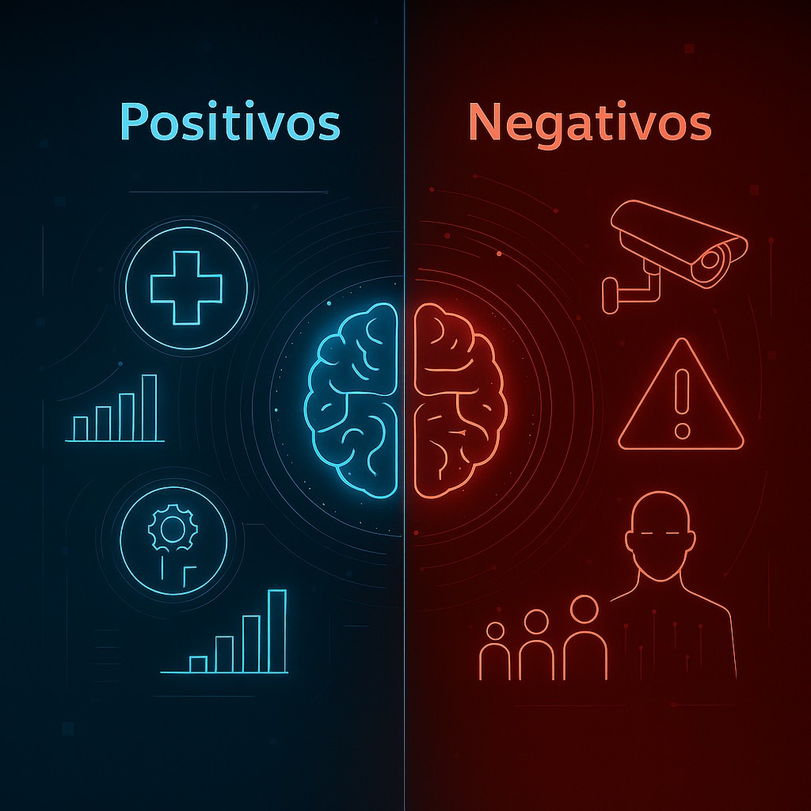

Análise de Impacto da IA
Pontos Positivos
- Automatização de tarefas repetitivas e perigosas
- Melhoria significativa na eficiência e produtividade
- Avanços revolucionários na área da saúde e diagnóstico
- Personalização de experiências e serviços
- Previsões mais precisas em diversas áreas
- Otimização de recursos e redução de desperdícios
- Democratização do acesso à informação
Pontos Negativos
- Deslocamento de postos de trabalho tradicionais
- Vieses algorítmicos que perpetuam discriminações
- Questões complexas de privacidade e vigilância
- Dependência tecnológica e perda de habilidades humanas
- Desafios de regulamentação e governança
- Concentração de poder em grandes empresas de tecnologia
- Potencial uso malicioso em armas autônomas

Impacto Socioeconômico
A Inteligência Artificial está transformando fundamentalmente a economia global e a estrutura da sociedade. Setores inteiros estão sendo remodelados, com alguns empregos desaparecendo enquanto novos surgem, exigindo diferentes conjuntos de habilidades.
Estima-se que até 2030, a IA contribua com até US$ 15,7 trilhões para a economia global. No entanto, essa transformação também amplia a desigualdade digital e exige investimentos significativos em requalificação profissional para garantir uma transição justa.
Impacto Setorial da IA
Saúde
- Diagnóstico precoce de doenças
- Descoberta acelerada de medicamentos
- Cirurgias robóticas de precisão
- Medicina personalizada
Educação
- Plataformas de aprendizado adaptativo
- Automação de avaliações
- Personalização do ensino
- Expansão do acesso à educação
Transporte
- Veículos autônomos
- Otimização de rotas
- Gestão inteligente de tráfego
- Logística automatizada